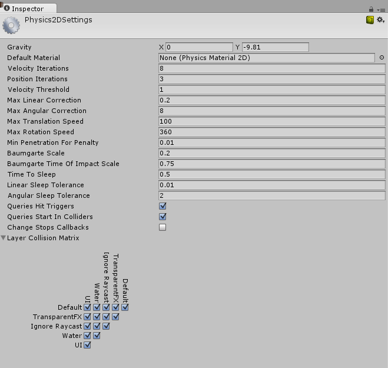

Physics 2D
Use the Physics 2D settings to apply global settings for 2D physics.
Note: To manage global settings for 3D physics, use the Physics 3D settings instead.

The Physics 2D settings define limits on the accuracy of the physical simulation. Generally speaking, a more accurate simulation requires more processing overhead, so these settings offer a way to trade off accuracy against performance. See the Physics section of the manual for further information.
| Property | Function |
|---|---|
| Gravity | Set the amount of gravity applied to all Rigidbody 2D GameObjects. Generally, you only set gravity for the negative direction of the y-axis. |
| Default Material | Set a reference to the Physics Material 2D to use if none has been assigned to an individual Collider 2D. |
| Velocity Iterations | Set the number of iterations made by the physics engine to resolve velocity effects. Higher numbers result in more accurate physics but at the cost of CPU time. |
| Position Iterations | Set the number of iterations made by the physics engine to resolve position changes. Higher numbers result in more accurate physics but at the cost of CPU time. |
| Velocity Threshold | Set the threshold for elastic collisions. Unity treats collisions with a relative velocity lower than this value as inelastic collisions (that is, the colliding GameObjects do not bounce off each other). |
| Max Linear Correction | Set the maximum linear position correction used when solving constraints (from a range between 0.0001 to 1000000). This helps to prevent overshooting. |
| Max Angular Correction | Set the maximum angular correction used when solving constraints (from a range between 0.0001 to 1000000). This helps to prevent overshooting. |
| Max Translation Speed | Set the maximum linear speed of a Rigidbody 2D GameObject during any physics update. |
| Max Rotation Speed | Set the maximum rotation speed of a Rigidbody 2D GameObject during any physics update. |
| Baumgarte Scale | Set the scale factor that determines how fast Unity resolves collision overlaps. |
| Baumgarte Time of Impact Scale | Set the scale factor that determines how fast Unity resolves time-of-impact overlaps. |
| Time to Sleep | The time (in seconds) that must pass after a Rigidbody 2D stops moving before it goes to sleep. |
| Linear Sleep Tolerance | Set the linear speed below which a Rigidbody 2D goes to sleep after the Time to Sleep elapses. |
| Angular Sleep Tolerance | Set the rotational speed below which a Rigidbody 2D goes to sleep after Time to Sleep elapses. |
| Default Contact Offset | Set a proximity distance value for colliders to be considered in contact, even they are not actually in contact. Colliders whose distance is less than the sum of their contactOffset values generate contacts. This allows the collision detection system to predictively enforce the contact constraint even when the objects are slightly separated. Caution: Reducing this value too far could cripple Unity's ability to calculate continuous polygon collisions. Conversely, increasing the value too much could create artifacts for vertex collision. |
| Auto Simulation | Enable this option to automatically run the physics simulation or allow explicit control of it. |
| Queries Hit Triggers | Enable this option if you want Collider 2Ds marked as Triggers to return a hit when any physics query (such as Linecasts or Raycasts) intersects with them. Defaults to enabled. |
| Queries Start In Colliders | Enable this option if you want physics queries that start inside a Collider 2D to detect the collider they start in. |
| Callbacks On Disable | Enable this option to produce collision callbacks when a collider with contacts is disabled. |
| Auto Sync Transforms | Enable this option to automatically sync transform changes with the physics system. |
| Job Options (Experimental) | See the Job Options section below. |
| Gizmos | See the Gizmos section below. |
| Layer Collision Matrix | Define how the layer-based collision detection system behaves. Select which layers on the Collision Matrix interact with the other layers by checking them. |
Job Options
The settings in the Job Options section allow you to use the C# Job System to configure multi-threaded physics.

| Property: | Function: |
|---|---|
| Use Multithreading | Enable this option to execute the simulation steps using the job system and use the rest of these options to control how to achieve that. |
| Use Consistency Sorting | Enable this option if maintaining a consistent processing order becomes important to the simulation. Executing simulation steps on multiple CPU threads produces separate batches of data. Processing these separate batches reduces determinism in processing order, although produces faster results. |
| Interpolation Poses Per Job | Set the minimum number of Rigidbody 2D objects being interpolated in each simulation job. |
| New Contacts Per Job | Set the minimum number of new contacts to find in each simulation job. |
| Collide Contacts Per Job | Set the minimum number of contacts to collide in each simulation job. |
| Clear Flags Per Job | Set the minimum number of flags to be cleared in each simulation job. |
| Clear Body Forces Per Job | Set the minimum number of bodies to be cleared in each simulation job. |
| Sync Discrete Fixtures Per Job | Set the minimum number of fixtures to synchronize in the broadphase during discrete island solving in each simulation job. |
| Sync Continuous Fixtures Per Job | Set the minimum number of fixtures to synchronize in the broadphase during continuous island solving in each simulation job. |
| Find Nearest Contacts Per Job | Set the minimum number of nearest contacts to find in each simulation job. |
| Update Trigger Contacts Per Job | Set the minimum number of trigger contacts to update in each simulation job. |
| Island Solver Cost Threshold | Set the minimum threshold cost of all bodies, contacts and joints in an island during discrete island solving. |
| Island Solver Body Cost Scale | Set the cost scale of each body during discrete island solving. |
| Island Solver Contact Cost Scale | Set the cost scale of each contact during discrete island solving. |
| Island Solver Joint Cost Scale | Set the cost scale of each joint during discrete island solving. |
| Island Solver Bodies Per Job | Set the minimum number of bodies to solve in each simulation job when performing island solving. |
| Island Solver Contacts Per Job | Set the minimum number of contacts to solve in each simulation job when performing island solving. |
Gizmos

| Property: | Function: |
|---|---|
| Always Show Colliders | Enable this option to show collider gizmos even when they are not selected. |
| Show Collider Sleep | Enable this option to show the sleep-state for each collider. |
| Collider Awake Color | Set the color to indicate that the collider (body) is awake. |
| Collider Asleep Color | Set the color to indicate that the collider (body) is asleep. |
| Show Collider Contacts | Enable this option to show current contacts for each gizmo. |
| Contact Arrow Scale | Set the size of the contact arrow that appears on collider gizmos. |
| Collider Contact Color | Set the gizmo color to indicate the collider contact. |
| Show Collider AABB | Enable this option to show the collider's bounding box. |
| Collider AABB Color | Set the gizmo color for the collider's bounding box. |